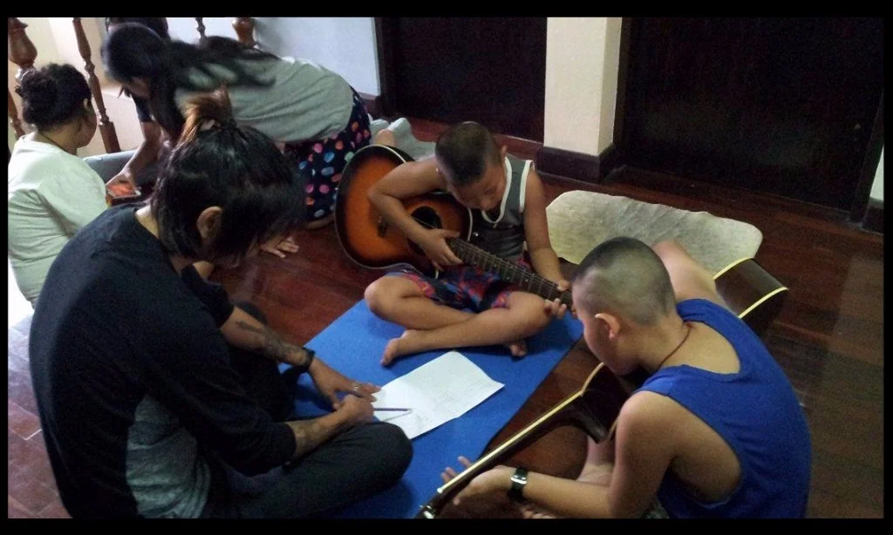

Pioneer a prayer trip
Go to a location nobody has worked in yet, and lay a foundation rather than build on one.
Outreach teams
Churches, youth groups and YWAM schools come and serve alongside us across Chiang Mai and the north. We have over 70 ministry locations, and some of them have never hosted a team at all.

The need
We currently have over 70 ministry locations across Thailand open to partnering with a visiting team, plus 80+ YWAM Thailand ministries of our own. Teams tend to gravitate towards the same handful of well known ones.
So we ask something slightly awkward of every team that writes to us. Prayerfully consider taking one location that is still waiting to receive its first outreach team, or that has been waiting somewhere between six months and two years to host another. Those are usually the places furthest from anything, with the fewest people looking in on them, and they are the reason this department exists.
How it works
Every YWAM team entering the country comes through the YWAM Thailand Outreach Teams Department, whether that is a DTS outreach, a School of Evangelism, a Bible school or a church group with no YWAM connection at all. There are two offices, one at YWAM Bangkok and one here at YWAM Chiang Mai, and which one handles you depends on where you fly into.
We do the placing, the transport booking and the introductions. There is one thing we ask you not to do, and we mean it kindly: please do not contact ministry locations directly. It confuses the host, it duplicates conversations, and it slows the whole process down for everyone in the queue behind you.
Go to a location nobody has worked in yet, and lay a foundation rather than build on one.
Work under a Thai pastor for the length of your stay, at the pace and priorities they set.
We place teams with groups outside YWAM where that is the right fit for what you can offer.
Slot into one of the 80+ YWAM Thailand ministries already running, from children's work to media.
Length of stay
As a guideline we ask teams to stay a minimum of two to three weeks in a single location. That is not an administrative preference. Relationships are the way anything reaches Thai people, and two weeks is roughly where a visiting team stops being a novelty and starts being someone the neighbourhood recognises.
Pastors and ministry leaders notice the difference too, and they tell us so. A longer commitment reads as respect. If your team is coming on a shorter trip, say so early and we will tailor the outreach to the time you actually have rather than pretending you have more.
What it costs
Most teams have to build a budget before they can commit to anything, so here are the published rates. Daily costs cover housing, food and local transport, and vary by region. Rates at some locations are set by the ministry host and differ from these, in which case we send you the real figures in writing.
Daily budget $15 per person per day
Team, for the whole trip $2,100 USD
Registration fee 2,500 baht
Translator, 1,000 baht per day 14,000 baht
Thai baht fees 16,500 baht
An estimate, not a quote. USD and baht are shown separately rather than converted, because the exchange rate moves and we would rather not publish a number that ages badly. The translator also needs daily meals, daily transport, and housing when the team is in a hotel or guesthouse.
The 2,500 baht registration fee is per team, not per person, and covers the calls, emails and paperwork of setting your outreach up. If your team is on a genuinely tight budget, tell us. We have hosted teams from many countries on many budgets since 2001, and we can usually discount something.
We can make your outreach work with whatever budget you have.
YWAM Thailand Outreach Teams Department
Landing here
Send us your complete flight itinerary and we send back a document called Airport Pickup and First Few Days, with the specifics for your team. Broadly, this is what happens.
A covered pickup truck collects the team and its luggage from Chiang Mai International and takes you to the Hospitality House. One truck carries up to about eleven people, at 300 baht one way. Larger teams get a second truck, and one more for every ten people past twenty.
The Hospitality House sits just south of Chiang Mai airport. Air conditioned dorm rooms with bunk beds, hot showers and wifi, with the kitchen, dining room and conference space open to everyone staying.
Every team gets a Thai cultural orientation plus an overview of YWAM's ministries across the country and the national strategy behind them, before going anywhere.
The day after orientation, most teams walk and pray over the city. In Chiang Mai there is no cost beyond the transport, 300 baht per truck each way.
Every team works with a Thai translator, who travels with you and serves the team as well as translating. Budget 1,000 baht per day plus their meals, transport and housing.
Our transportation coordinator books the buses, trains or vans out to your ministry location. Seats are not always available on the dates you would pick, particularly in high season, so book early and stay flexible.
One thing to sort before you leave home: we ask every team to buy medical insurance for the trip.
Who you deal with
Outreach teams are coordinated by the North Thailand Outreach Team Coordinators, part of the YWAM Thailand Outreach Teams Department. The same people who answer your first enquiry arrange the placement, the housing and the transport, so nothing gets handed between desks and lost.
Behind them is the base itself: about 100 staff across 15+ ministries and 10 or so training schools, working among 6+ different people groups in the city and the surrounding region. When we place your team somewhere, it is usually with people we know by name.
Get involved
Write to us through the base contact page and choose the Outreach Teams Department. The more of the following you can tell us in that first message, the faster we can find you somewhere real.
Team size, rough ages, and whether anyone speaks Thai. It changes what we can place you in.
Dates, even approximate ones, and how many days you can give to a single location.
Teaching, sport, music, construction, medical, media, children's work. Tell us the real skills in the team rather than the ones you wish you had.
Say the number. It is not a test, and knowing it early means we place you somewhere you can afford instead of unwinding a plan later.
The places that have never hosted a team need groups willing to go without knowing much in advance.
Contact
Questions about placement, budget, dates or what your team should pack. Email the base and mark it for the Outreach Teams Department.
Rates and fees on this page are published by the Outreach Teams Department. Confirm the current figures with us before you build a final budget.
Follow along
Get social
Before your team arrives, it is worth reading around the ministries you might be placed with. We post on Facebook and Twitter, and the rest of this site covers the schools and ministries your team could end up serving alongside.